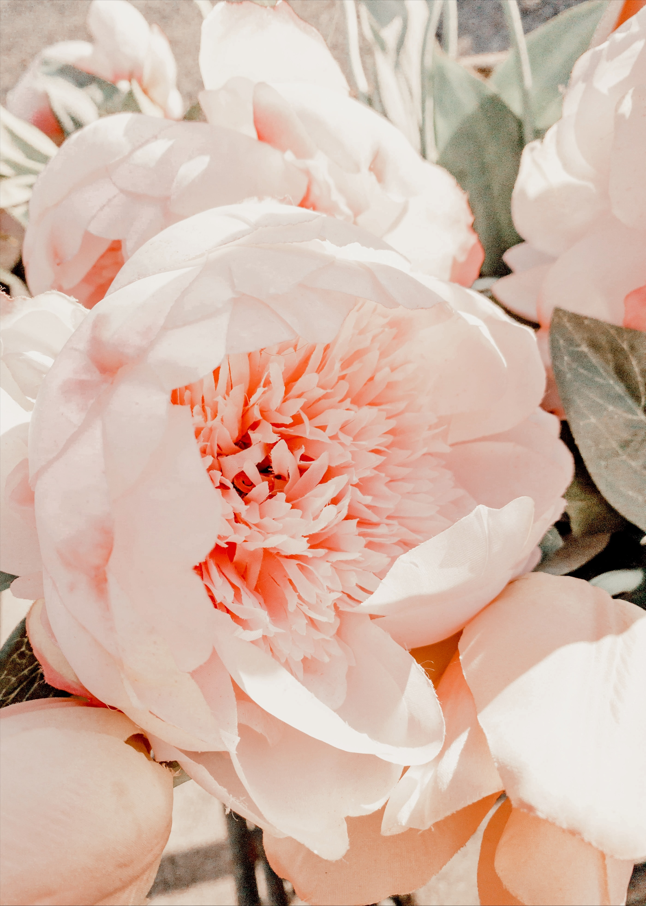

Flower Personality Type
Sunflower

ENFJ. Individuals with ENFJ personality radiate passion, authenticity, and warmth. They are born leaders that inspire people. They energise people with their impeccable communication and infectious enthusiasm and happiness. Just like the sunflower, they display strength, leadership, and irresistible charm.
Daffodils
ISTP: Persons who have an ISTP personality dare to be different, and it gives them so much joy when they are seen as eccentric and unique. They enjoy challenges and often treat them as games that they need to win. They don’t like to be pinned down. They would rather bloom wherever life brings them. Their perfect flower is the daffodil which symbolises achievement, new beginnings, and prosperity.
Peonies 
ESFJ: ESFJs are compassionate, warm, and caring people. They are incredibly socially conscious and thrive when serving those around them. This contributes to their popularity amongst their social circles. The beautiful peony perfectly embodies their personality since this bloom represents compassion, friendship, and love.
Hydrangeas
INFP: These people are idealistic and imaginative. They see the best in everyone around them. Their artistic expression and ideas speak the loudest in the room. INFPs find inspiration from their emotional depth. Hydrangeas perfectly represent this personality since it is full of dreaminess and emotion.
Daisies
INFJ: INFJs live their lives towards changing the world - and oftentimes, they do. They are virtuous visionaries that dedicate themselves to making the world a better place to live in. Daisies perfectly represent these individuals - full of inspiration and virtue.
Lavenders
ISFP: ISFPs are calm and gentle individuals. They enjoy the warmth of being around others and will spread this to everyone they meet. They are best represented by lavender which embodies calmness and warmth.